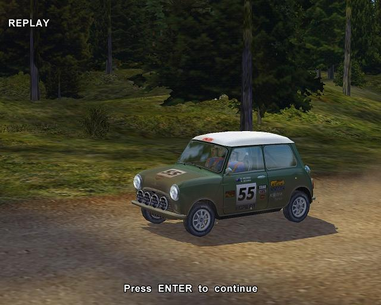
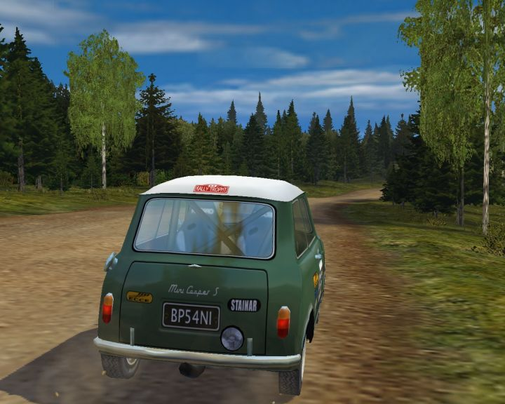
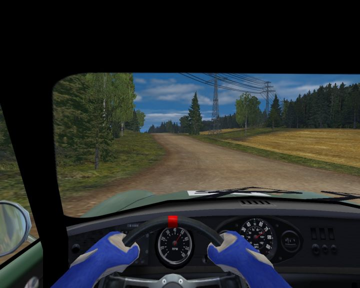

Mini Cooper rally demo



Details
My notes
I remember driving a Mini Cooper on a dirt road in a PC demo from a Digit magazine disc.
Rally Trophy is a strong lead. Its demo featured a Mini Cooper S on a Russian gravel stage. It appeared on Digit’s December 2001 Playware CD, but the remembered single-seat Lotus does not fit.
Possible identification
- Candidate game
- Rally Trophy
- Released
- 2001
- Developer / publisher
- Bugbear Entertainment / JoWooD
- Platform
- Windows PC
Why it fits
The October 2001 demo offered one car, the Mini Cooper S, and one gravel stage in Russia. That matches the remembered car and dirt surface. The demo also appears in Digit’s December 2001 Playware listing.
What does not fit yet
The game’s Lotus is a Ford Lotus Cortina, a closed car. It does not match the remembered narrow, open-cockpit, single-seat racer. This identification remains a strong lead, not a confirmed memory.
About Rally Trophy
The full game focused on classic rally cars from the 1960s and 1970s rather than the modern cars typical of its era. Its car roster included the Mini, Alpine A110, Ford Escort, and Lotus Cortina.